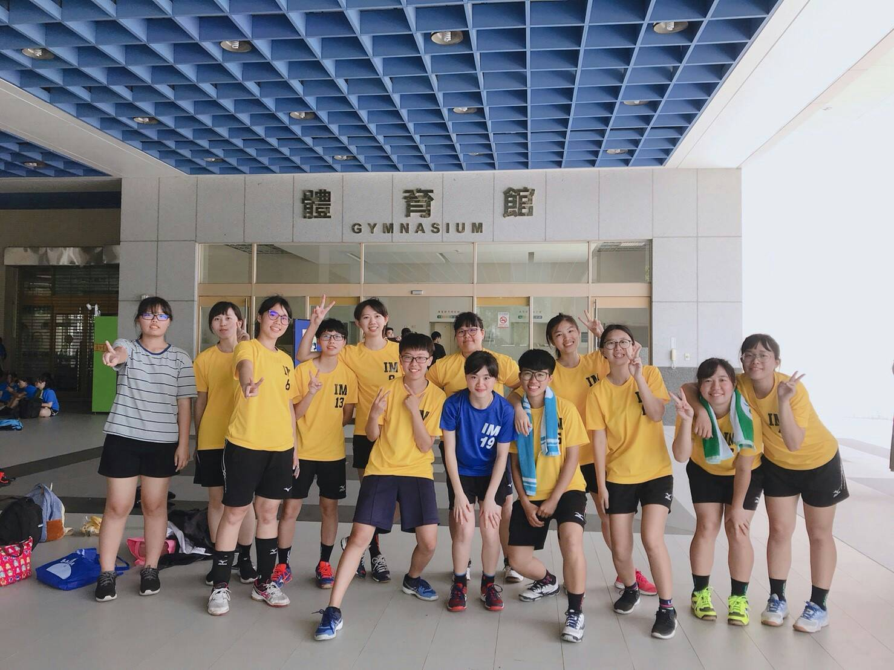
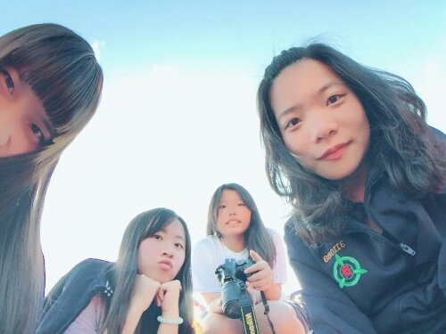
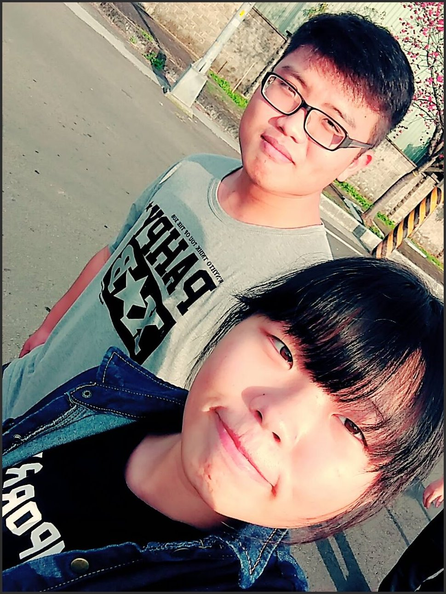
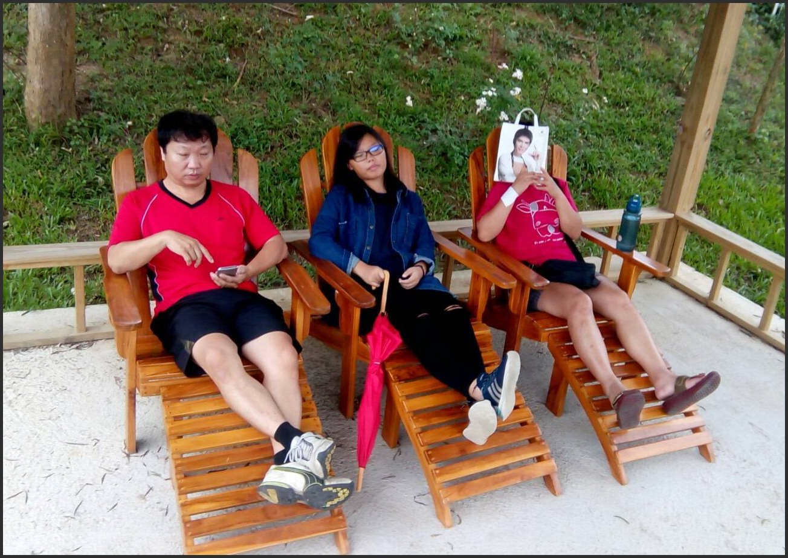
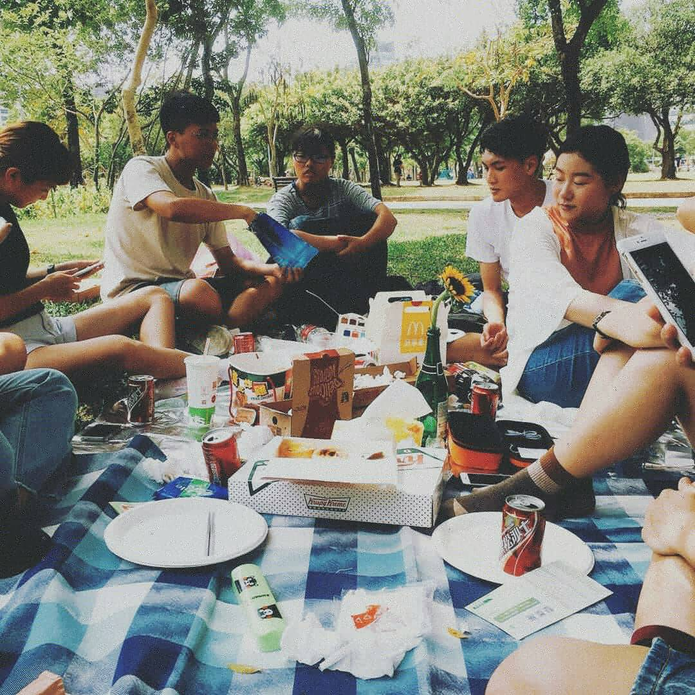
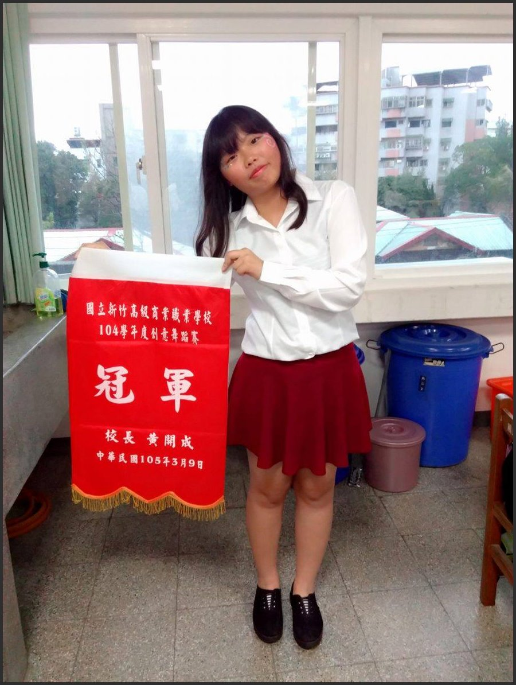
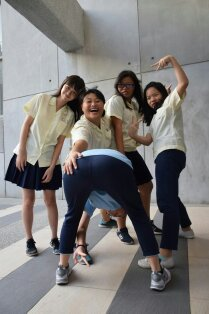

自我小檔案
87年9月24出生的我來自全台有名的風城---新竹,上有一個哥哥,姑且勉強算是受到疼愛的老么,由於父母皆有工作加上哥哥個性很呆,我永遠是團體中最早熟的,習慣獨立,自立自強,習慣照顧別人,在朋友中總是扮演老媽的角色,喜歡旅遊、看小說、打工。
學習經歷

新竹高商hccvs ---> 中原大學cycu
社團經歷

>>放棄社團，選擇系隊
大學的一大樂趣為參加社團，認識不同系的同學，剛上大學的我對這一切也充滿憧憬，但很快的，我失望了，中原大學的社團類型不是我的菜，因此我將目光投向系隊，但卻不是擔任球員，而是球經，部當球員的理由是上了大學後，我將注意力放在充實自己，練習系隊我可能無心於課業，於是我以另一種方式待在球隊，以球經的身份好好出一份力。
工作經驗
從小我就喜歡打工，每一份工作都是新的挑戰，喜歡發薪水時拿著自己賺的錢去買自己想要的東西，我的打工史追溯至高二，時至今日一共做過三份工作
- 班多尼翁西餐廳--假日工讀(2016-2017)
- 半蹲廚房--暑期工讀(2017)
- 呷飽飽創意鍋燒--工讀生(2018-now)
興趣
read|sport|travel|save
自我期許&目標
大學4年，我列了下列幾個目標希望自己能利用時間好好達成
- 學好日語:有機會的話我希望自己能去參加語言學校，練習日常對話，使他能成為我的第二語言。
- 學習photoshop:由於本身從小喜歡繪畫，但沒有機會接受繪畫教育，面對資訊化時代，我希望自己能夠繼續在電腦上找到自己的繪畫夢。
- 扎實所學:學費這麼貴，我希望自己能夠從事相關工作，不然50萬感覺像丟水裡。
生活點滴
|  |  |  |
|  |  |  |